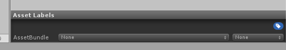

Shaders - Introduction
As of Create Your Frisk v0.6.5, you may now use Unity shaders in your encounters (and the overworld)!
Be warned that this is a very advanced feature and not everyone will be able to create
their own shaders. However, any shaders people make and release can be added into a mod very easily.
This page is intended to serve as a basic outline and interface into how the system works.
Basic Overview
Here's how shaders are set up in CYF:
-
First of all: Shaders are stored as
Unity AssetBundles.
You might expect them to be .shader files, but they aren't. Keep that in mind. - Every bundle can contain multiple shaders. When loading a shader in your mod, you will have to provide the name of a bundle, as well as the name of a shader in the bundle.
- The actual file setup consists of a folder (the bundle) within the Shaders folder, with files inside named windows, mac, and linux. Keep all of these files if you want your mod to be cross-compatible between operating systems.
-
These files are created by Unity, so if you want to create your own shaders, you MUST set up
Unity on your machine.
Read Unity Setup (Optional) for a guide. - There are some default shaders included with CYF, present in the CYF/Default/Shaders folder. They are treated just like sprites and audio, in that shaders will be read from the mod's Shaders folder first, and the Default shaders folder second.
And on the topic of creating shaders:
-
All shaders are coded using Unity ShaderLabs. See Coding a Shader for
links and help.
They will be created as .shader files on the Unity side before they're exported to bundles.
Note that the majority of the work and involvement in creating a shader is knowing how to write the shader, and has nothing to do with CYF. -
Not all errors and issues with shaders will explicitly show an error screen in game, instead resulting
in a pink "error" shader being applied.
When creating your shader in Unity, you will be able to see syntax errors and such before compiling your shader. -
If the shader (and all of its fallbacks) are found to be unsupported, you'll see an error screen when
loading the shader.
You will need to use the Lua function pcall to account for this (an example is provided in The Shader Object). - While actually creating a shader in Unity, there's a shortcut function available (shader.Test) that does not require you to build your shaders to AssetBundles repeatedly.
- Depending on the setup of the shader, it may or may not cause issues with Create Your Frisk features such as sprite layers and sprite masking. This is why it is recommended that all shaders used be based off of the template located at Coding a Shader and Assets/Editor/Shaders/CYFShaderTemplate.shader.
Creating Shaders
The first step involved with creating shaders is to set up Create Your Frisk in Unity on your machine.
Read through Unity Setup (Optional) for a guide on doing this.
After that, locate the path Assets/Editor/Shaders. This is where you will create and edit
your shaders as .shader files. You can also find here all of the default shaders Create
Your Frisk comes with, which are in Default/Shaders when Create Your Frisk gets built.
Create a new .shader file here, with whatever name you like. This name is the name you will
eventually pass to shader.Set from the Lua side. Follow the instructions in
Coding a Shader to write the contents of your shader file. You may use
shader.Test from mods within the Unity editor (found at Assets/Mods
to test shaders before you compile them.
Once you're done editing and testing your shader, it's time to compile it to an AssetBundle. Using the Unity project
files viewer (normally at the bottom of the screen), browse to the path Assets/Editor/Shaders.
Click on your shader. Look for the "Asset Windows" label (normally at the bottom-right of the screen, under the
Inspector).

Click on the button to the right of "AssetBundle" (says "none" in this image), and enter the name of a bundle. This
will be the name of the folder that gets exported, that you will be able to drop in your mod's
Shaders folder later. You can have multiple shaders contained in one bundle, and as many
bundles as you like. As an example, all of the shaders listed below are part of the
cyfshaders bundle.
Finally, to compile all shaders into AssetBundles, click on Create Your Frisk at the top of
the Unity window, and click on Build Shader AssetBundles... in the list. A new window will
appear.

You may either click Build all AssetBundles to build every AssetBundle you defined
earlier, or you may enter a single name in the box and click Build one AssetBundle to only
build one AssetBundle of your choosing (for instance, cyfshaders).
You will have to wait for a moment while the shaders get built into bundles. You will see an alert box whenever the
shaders are done being bundled. Once finished, your bundles will appear in
Assets/Editor/Output! They will be present as folders, with the same names as the
AssetBundles you set up in the editor. Each one of these folders is a shader bundle that you may now move to your
mod's Shaders folder.
Sample Shaders
Create Your Frisk v0.6.5 comes with an AssetBundle named "cyfshaders", containing several sample
shaders for you to toy with, be it in the Lua side or as a means to create your own shaders.
Remember that you can find the source code for these shaders by downloading CYF's source code - see
Unity Setup (Optional).
You may set all of the properties listed in the "usage" column by using the functions within The Shader Object
on the Lua side. All the keywords are disabled by default, that's just how the shader language functions.
| Shader Name | Description | Usage |
|---|---|---|
| CYFShaderTemplate (not in the bundle) |
A template base shader to build all your own shaders from. Same as the sample shader in Coding a Shader. | No unique properties or variables. |
| Displacement |
A shader that allows for the use of displacement maps, by means of images in your mod's Sprites folder.
Colors greater than 50% will move the rendered space forward, while colors less than 50% will move it backwards. For reference, the color #808080 represents zero displacement. |
|
| FitScreen |
This shader is intended for use alongside Misc.SetWideFullscreen(true), and should be
applied to the camera through Misc.ScreenShader.
It forcefully takes the 640x480, 4:3 normal display area of CYF and stretches it across the user's monitor, when in fullscreen. In other words, it uses a "stretch" display method instead of keeping letterboxing, even if it is controllable. |
|
| Gradient | A simple shader that takes 4 colors (all white by default), applies them to the 4 corners of an image (or the screen), and generates a color gradient connecting them. The colorization is done similarly to sprite.color, so the effect may be most visible with white images. |
|
| Invert | A simple shader that inverts the colors of every displayed pixel. | No unique properties or variables. |
| Rotation |
This shader is intended to be applied to the camera through Misc.ScreenShader.
The purpose of this shader is to allow the entire screen to be rotated all around. It has customizeable pivot points, as well. |
|
| ScreenScale |
This shader is intended to be applied to the camera through Misc.ScreenShader.
This shader scales the screen horizontally and vertically, similarly to sprite.Scale. Values can be both positive and negative, which can also result in flipping the screen. |
|
| Wave | A nifty effect that makes an image appear to wave and sway back and forth. Its size and distance can be customized. |
|